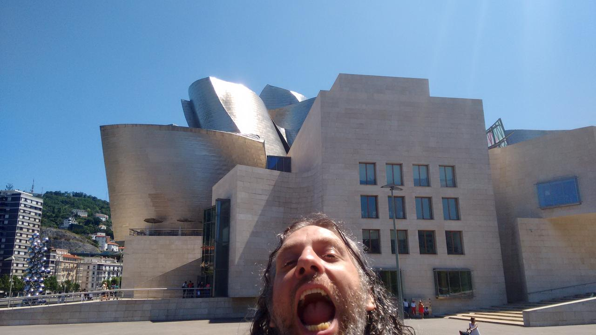
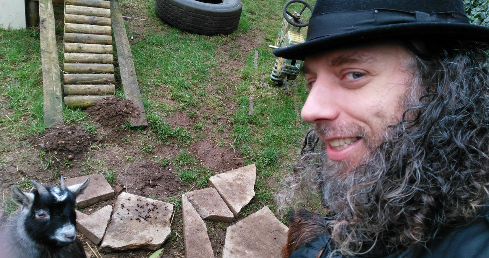
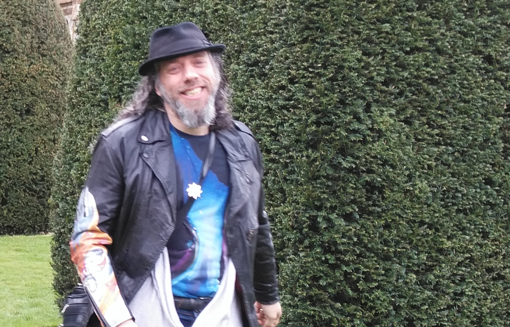

My friend Michael
My dear friend Michael passed away this weekend.
I want to begin by expressing my deepest sorrow and condolences to his family.
Michael and I shared many adventures together, often with our families in tow, and I find consolation by writing these words of celebration and remembrance.
We last saw each other only days ago: he came over and we spent a couple of joyful hours deep in conversation over lunch. He was his usual larger-than-life self, full of energy and enthusiasm about his work and animated about where his next steps in life may take him. He was busy saving up for a new house, planning new training for clients, enthusing about his current job, and explaining how rewarding he found the Python coding he was doing at that moment. Later I told a mutual friend how positive and "together" he seemed, that it felt like his ship was pointing in the right direction and that he had a clear sense of the course he wanted to take.



It was wonderful to see him like that, because he was also a deep and complex man who, of his own admission, led a life full of challenges, paradoxes and delightful eccentricities.
He met the challenges with honesty and bravery: we spent many hours walking together in the woods at Everdon Stubbs talking through whatever was on his mind. I learned of pain, struggles and shadows as he found the courage to meet, work out and then work through his internal demons.
He was a walking paradox: both completely certain of himself, and yet always questioning everything. He didn't shy away from fiercely independent thinking, often about the oddest of subjects or through the most extraordinarily original (and, dare I say, weird) lines of argument. Yet his exceptional intelligence and capacity for creative thinking meant he was always several steps ahead, laughing as everyone else tried to catch up, only to find he'd already moved onwards by the time we'd figured out what he was on about.
And this originality expressed itself in other, perhaps eccentric, ways.
Michael's unique sartorial "approach" was, literally, a thing to behold. Only
he could pull off a fedora, eye wateringly loud tie-dye t-shirt, woolly
cardigan and leather biker's jacket AT THE SAME TIME (see above). "Colourful"
is a word that doesn't even come close. His exploration of perfume and vaping
meant you often smelled him coming long before actually seeing him. And that
voice! I find it hard to hear speech when there's a lot of ambient noise. Yet
Michael's pitch and timbre meant he cut through no matter the volume. I may
have been speaking to someone at the bar, but could only hear Michael (on the
other side of the pub) expounding the intricacies of Python's mock library
(his contributions to the Python programming language are legendary), holding
forth in an exposition of the history of Persian perfume, or complaining about
the latest Hollywood trash we'd recently seen together at the cinema.
Later, when I found myself in a dark place he was unable to be there for me, for he was also struggling at that moment in his life. Yet - and here's one of the most important and admirable aspects of Michael - he bravely reconnected with honesty, humbleness, and what I can only describe as a trusting and vulnerable loving friendship. This was Michael's deep humanity on display: born of difficulty and distress, overcome through heroic and down-to-earth self-awareness, distilled with compassion.
I'm so glad we reconciled... because some of our best times were the most recent ones: going to see god-awful movies together at the local cinema (Michael always talked [actually, he boomed!] through the films with a hilarious commentary on the action), stimulating, thoughtful and joyously silly conversation shared over a pint or a meal, and then there was our way of greeting each other: a large hug to the words, "you sexy beast".
As I write these final words, with tears rolling down my cheeks, I want you to know what a privilege it was to have Michael in my life. His capacity for joy, love and mischief shone forth brightly: he blazed through technical challenges, ignited conversations and dazzled with nimble repartee.
I will miss him terribly.
Rest in peace, you sexy beast.